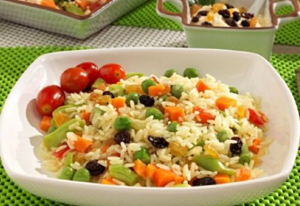
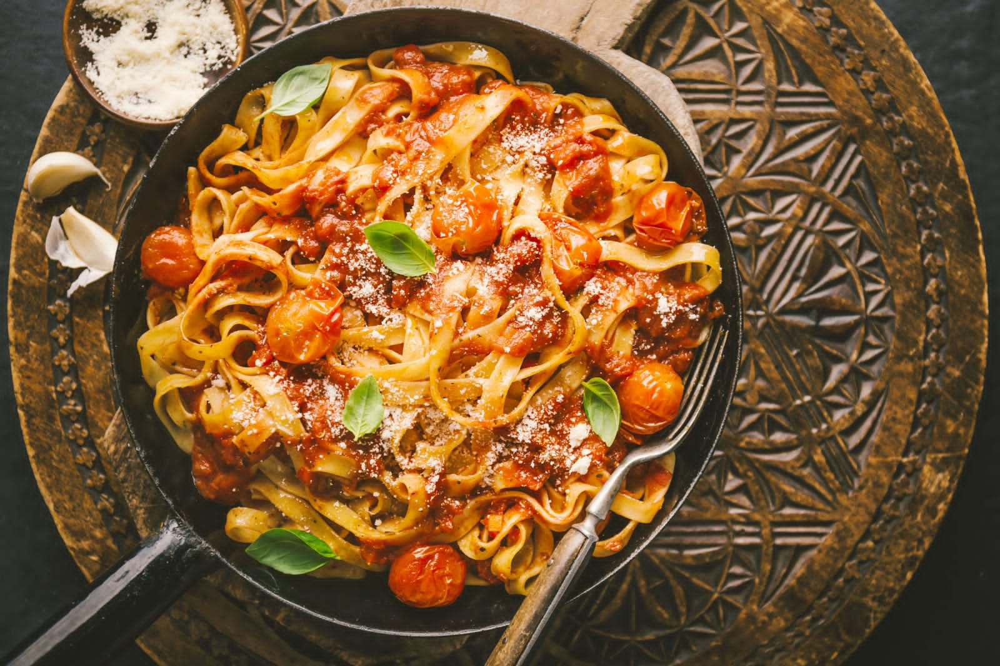
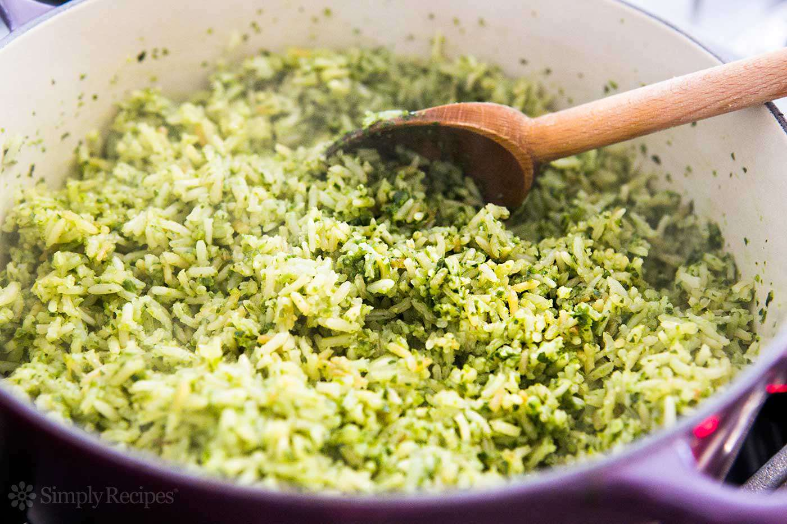
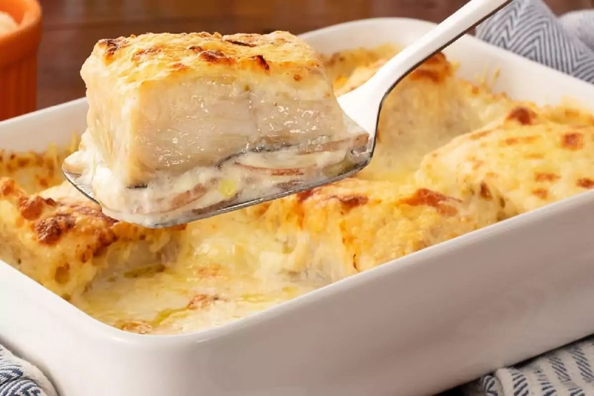

Tema V
Pratos Saudáveis
Arroz Colorido
"John Sabores"
Ingredientes:
- 300g de arroz
- 100ml de óleo vegetal
- 300ml de água
- 1 cebola já picada
- 1 pimenta já picada
- 200g de azeitonas verdes e pretas
- 300g de ervilhas
- 2 cenouras já picadas
- 1 lata de peixe atum já picado
- 2 colheres de sal
- 2 salcichas e 2 chorissos já cortados em rodelas
- 100g de salsa
- 1 folha de louro.
Como fazer:
- Em uma panela colocar o óleo, a cebola, o sal, as cenouras, pimenta e a folha de louro. Deixar cozinhar durante 40 segundos, de seguida adicionar a água
- Quando a água ferver, adicionar o arroz, as ervilhas, o atum, os chorissos, as salcichas, as salsas e misturar muito bem. Deixar a cozinhar durante 14 minutos
- Depois de cuzer coloque as azeitonas por cima e come bem que vaz Amar.

Massa com Tudo
"John Sabores"
Ingredientes:
- 300gm de massa
- 100ml de óleo vegetal
- 300ml de água
- 1 cebola já picada
- 1 pimenta já picada
- 300gm de ervilhas
- 2 cenoras já picadas
- 1 lata de carninha
- 2 colher de sal
- 2 salcícia e 2 chorissos já cortados em rodelas
- 100gm de salsa
- 4 tomates já cortados em rodelas
- 1 folha de louro.
Como fazer:
- Em uma panela coloque o óleo a cebola o sal a cenoura a pimenta os tomate a folha de louro e deixa cusinhar 40segundos e em segui adiciona a água.
- quando a água ferver adicione a massa as ervilhas a carninha os chorissos as salcícia a salça e misture muito bem e deixa cuzer durante 10min.
- Depois de cuzer decora aos seus gostos e come bem que vaz Amar.

Arroz Verde
"John Sabores"
Ingredientes:
- 300gm de arroz
- 200gm de salsa já triturada
- 100ml de óleo
- 500ml de água
- 1 lata de ervilha
- 1 cebola já picada
- 1 pimenta já picada
- 1 folha de louro.
Como fazer:
- Começa por pegar em uma panela e coloque o óleo a cebola a pimenta a folha de louro deixa conzinhar durante 30segundo, depois misture e adicione a água.
- Depois da água ferver adicione as salsas o arroz as ervilhas e deixa cozinhar durante 30min.
- Depois de sair come bem que vaz Amar.

Bacalhau com Natas
"John Sabores"
Ingredientes:
- 2 Metade de bacalhau já fervido com sal e alho
- 1 cebola já picada
- 1 pimenta já picada
- 500ml de leite
- 5 batatas fritas em cubos
- 100ml de azeite
- 500ml de leite em líquido
- 3 pacotes de natas
- 4 colher de sal
- 5 queijo ralado
- 400gm de azeitonas verdes e pretas.
Como fazer:
- Em uma no fogo panela coloque o coloque o azeite a cebolas a pimenta o sal a folha de louro e deixa cozinhar durante 5min.
- Agora pega uma outra panela e coloque o leite e as natas e uma colher de sal misture e deixa ferver durante 5min.
- Agora coloque as batatas fritas o bacalhau já picado e o molho da natas com leite misture muito bem.
- Agora em um tabuleiro coloca a nossa comida e depois coloque o queijo ralado e as azeitonas por cima e leve ao forno durante 30min.
- Depois de sair já sabes a dica, come bem que vaz Amar.
